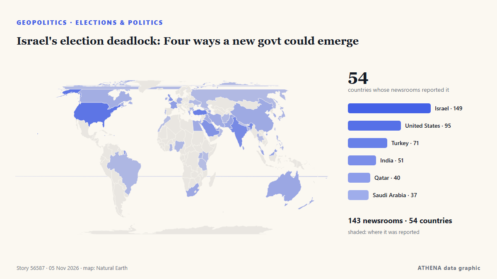

Geopolítica, política y seguridad
PatrocinadoPresentado por  Cybernetics and Artificial Intelligence Lab Welcome to the Cybernetics and Artificial Intelligence Laboratory, established at the Department of Business Administration of the National and Kapodistrian University of Athens. The lab is headed by Professor Dimitrios Thomakos. The lab aims to do research that can be published in top venues. Our research uses tools and methods of Artificial Intelligence, and lies in the following areas: - Forecasting - Decision making - Cyber security - Finance We are always looking forward to collaborating with exceptional students!
Cybernetics and Artificial Intelligence Lab Welcome to the Cybernetics and Artificial Intelligence Laboratory, established at the Department of Business Administration of the National and Kapodistrian University of Athens. The lab is headed by Professor Dimitrios Thomakos. The lab aims to do research that can be published in top venues. Our research uses tools and methods of Artificial Intelligence, and lies in the following areas: - Forecasting - Decision making - Cyber security - Finance We are always looking forward to collaborating with exceptional students!
Los titulares se muestran en inglés, tal como se publicaron.

Elecciones y políticaIsrael's election deadlock: Four ways a new govt could emerge
LONDON: It is a measure of how much is at stake in Tuesday’s legislative election in Israel, and how finely balanced the outcome might be, that a record 22,000 police officers have been deployed in… de Arab News
| 23 oct | 251 |
|---|---|
| 24 oct | 175 |
| 25 oct | 179 |
| 26 oct | 318 |
| 27 oct | 278 |
| 28 oct | 236 |
| 29 oct | 245 |
| 30 oct | 287 |
| 31 oct | 152 |
| 1 nov | 211 |
| 2 nov | 312 |
| 3 nov | 344 |
| 4 nov | 357 |
| 5 nov | 138 |
Trump says US will end military aid to Israel by end of the year
Says democrats, left-wing politicians using US financial support to Israel as a talking point to criticise Republicans. de Express Tribune
Trump says Hegseth doing 'a very good job' as questions swirl about his future
WASHINGTON: US President Donald Trump backed Defence Secretary Pete Hegseth on Wednesday, a day after Democrats won control of both chambers of Congress in midterm elections that reflected voter… de New Straits Times
Trump accepts midterm results as system holds up against election interference efforts
Michigan rejected ‘hateful, spiteful campaign’, says El-Sayed
Months of attacks on Democrat Abdul El-Sayed’s Muslim identity made the state’s contest one of the nation’s most closely watched Senate races. de Free Malaysia Today
Israeli strikes in Gaza kill 8, including a child
Five people were killed in Khan Yunis and three in Gaza City, according to Gaza's civil defence service. de Free Malaysia Today
Trump under pressure on Iran war after Republicans' midterms defeat
US President Donald Trump concedes that the war he ordered on Iran was partly to blame for his Republican Party's sweeping midterms losses -- but even as he comes under pressure, analysts said… de Al-Monitor
Trump loses control of Congress
If Republicans lose control of Congress, the rest of his time in office is likely to be consumed by Democratic-led investigations into his administration and his business dealings, and possibly even… de PBS NewsHour
Iran's chief negotiator says Americans voted 'no to war'
Iran's chief negotiator in talks with the US has said that Americans voted "NO TO WAR", after President Donald Trump's Republican Party suffered a stunning defeat in the midterm elections. de MyJoyOnline
What Trump losing power over Congress means for Iran, Ukraine and foreign policy
Democratic control of Congress could bring greater scrutiny of Trump’s handling of the Iran and Ukraine wars, while leaving him broad foreign-policy powers. de CNBC World
After JD Vance, now Trump Jr blames Iran war for US midterms defeat
Says war in Iran had weighed on Republican candidates, even as voters backed his handling of it. de Express Tribune
Morocco will ‘uphold Western Sahara ceasefire after UN mission ends’
Morocco will stay committed to the ceasefire in the occupied Western Sahara despite the end of the United Nations peacekeeping mission in the territory, the Royal Palace said on Wednesday. de Cyprus Mail
UK PM Burnham says he is ‘open’ to formal apology for slavery, but rules out reparations
At least 12.5 million Africans were abducted and sold into slavery. de Express Tribune
US Midterms: Democrats take control of US Congress as voters reject Trump’s Republicans
Democrats have taken control of both chambers of the United States Congress in the November 3, 2026, midterm elections, dealing a major political setback to President Donald Trump and his Republican… de Vanguard
Iran’s IRGC says two tankers, tugboat were ablaze in Hormuz Strait
Kayhan argued that issues related to Iran and the Strait of Hormuz have become a significant factor in the American midterm elections. de Tehran Times
Democrats projected to take over control of US House of Representatives
Control of the House depends on which party reaches the 218 seats necessary, while the Senate requires 51 for Democrats or 50 for Republicans because of Vice President JD Vance's tiebreaking vote. de PBS NewsHour
Top takeaways from the US midterm elections
Exit polls point to widespread voter discontent over the cost of living and declining Republican support among several key groups that helped Trump win the 2024 presidential election. de The Kathmandu Post
Republican US House speaker to step down after midterm rout
Mike Johnson, second in the line of presidential succession, previously suggested he might remain party leader even if Democrats won control. de Free Malaysia Today
Democrats take House and Senate from Republicans in US midterm rout
Democrats will control both chambers of Congress after flipping seats in Republican strongholds across the US in an election seen as a repudiation of President Donald Trump. de DW English
US markets rise as Democrats sweep midterm elections
Nasdaq, Dow, and S&P 500 open higher after Democrats take control and Trump accepts results. de Al Jazeera English
Keisha Bottoms makes history as first Black woman elected US governor
Democrat Keisha Lance Bottoms and Republican Rick Jackson are running to be Georgia’s next governor in a race that could reshape control of a crucial battleground state and even make some history… de The National Herald
Progressive Abdul El-Sayed wins Michigan Senate race to become first Muslim US senator
What Americans are saying about how they voted in the midterm elections
Pope Leo XIV, the Catholic Church's first US-born pontiff, has voted in the United States midterm elections, submitting his mail-in ballot in Chicago, the Vatican confirmed. de RTÉ News
Democrats capture Congress in sweeping setback for Trump
Democrats captured majorities in both the Senate and House on Tuesday, scoring sweeping victories that reached deep into Republican strongholds as tens of millions of voters delivered a scathing… de The Korea Times
Russian strikes disrupt water and power in Kyiv
KYIV, Ukraine, Nov 4, (AP): Overnight attacks on critical infrastructure triggered power and water outages across Kyiv and surrounding regions Wednesday as rescuers combed throug... de Arab Times
Spain’s Sanchez reshuffles cabinet after transport minister quits over train crashes
Puente said he had decided to resign after the Urda crash and would not stand in the Nov 29 election. de The Straits Times
Russian strike on Kharkiv hospital raises injury toll to 73
In Kharkiv, 73 people were injured as a result of a Russian attack on the night of November 3. de Ukrinform (English)
Democrat James Talarico wins Texas Senate seat
Democrat James Talarico has won the Senate seat in Texas, according to a race call by the Associated Press. de NPR
Neighbors are Iran's priority, Araghchi says
Iran's Qalibaf says progress only possible when Tehran's seven conditions are met Iran's parliament speaker said on Thursday that Tehran's conditions had been repeatedly and clearly communicated to… de Middle East Eye
Lone Star turns blue: Democrats Talarico, Hinojosa topple Texas Republicans
Democrat James Talarico, a former schoolteacher and Presbyterian seminarian who campaigned on a “politics of love,” on Tuesday won the US Senate race in Texas, dealing a historic blow to Republicans… de Dawn
US Midterms: Trump accepts midterm results, pledges to work with Democrats
Democrats remain ahead in national polls as Trump and candidates make their final push in the days before polling day. de Al Jazeera English
Kremlin confirms trilateral talks on Ukraine set for Nov 10-11 in Abu Dhabi
The United States will bring together delegations from Ukraine and Russia in Abu Dhabi on November 10-11 to discuss ending Russia's conflict with Ukraine, post-conflict security agreements and… de CGTN (World)
US strikes Iran’s Qeshm island – Report
The US has not publicly announced the attacks, so as not to signal any intention of resuming major combat operations, the Wall Street Journal reported. de CNA (Channel NewsAsia)
First polls close in closely watched U.S. midterm elections
The US midterm elections next month could change the course of American politics at home and – and American policy abroad. de The National
Death toll hits 29 after Russian strike on Ukrainian aid site, with 48 still missing
Russia launched 289 attack drones, 17 ballistic missiles and 59 cruise missiles across nine regions, President Zelenskyy said in an online post that noted the barrage coincided with U.S. elections. de NPR